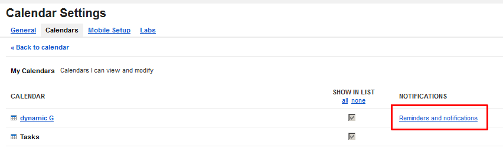
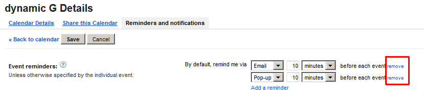

Calendar sync setup and troubleshooting
Cyanogenmod Users
When using «Cyanogenmod Privacy Guard» or «App Ops» make sure you assign calendar
read and write access to the «DynamicG Calendar Sync Plugin», not the main «Time Recording Pro» app.
Missing permission typically causes an empty list on the app's "Calendar Selection" screen.
(A) Android System Settings
Check your Android system settings and make sure your target account is marked for Calendar Sync
(B) Calendar Settings
Open the Calendar app and go to Menu / "Calendars to be displayed". Make sure your target calendar is visible and marked for sync
(C) Time Recording Settings
Enable Calendar sync in the Time Recording app (see Menu / Preferences / Google Calendar Sync)

(D) Calendar Reminders
You might receive calendar alerts and/or email reminders when adding future entries to Time Recording.
Time Recording does not set calendar reminders explicitly, hence the Google Calendar accounts' defaults are being used.
=> To disable these, log in to your Google Calendar account settings and remove the "Default reminders":

